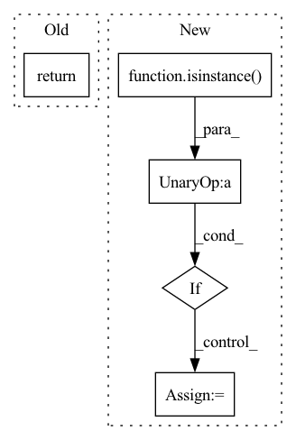

Pattern ID :1135

Before Change
i = (h - th) // 2
j = (w - tw) // 2
common_crop_region = (i, j, th, tw)
return apply_all(x, lambda y: apply_crop(y, common_size, common_crop_region))
class ColorJitter(nn.Module):
After Change
tw, th = common_crop_size
i = (h - th) // 2
j = (w - tw) // 2
if not isinstance(x, (list, tuple)):
return crop(x, h, w, th, tw)
ret = []
for img, (rw, rh) in zip(x, size_ratios):
ret.append(crop(img, i * rh, j * rw, th * rh, tw * rw))
return ret
In pattern: SUPERPATTERN
Frequency: 3
Non-data size: 5
Instances
Fragment ID: 3530213
Project Name: coloquinte/torchsr
Commit Name: 5c2c956fd875020d071302db9a93f34552a83bb3
Time: 2021-03-24
Author: gabriel.gouvine_GIT@gmx.com
File Name: transforms/transforms.py
M Class Name: CenterCrop
N Class Name: CenterCrop
M Method Name: forward(2)
N Method Name: forward(2)
M Parent Class: nn.Module
N Parent Class: nn.Module
M File Name: transforms/transforms.py
N File Name: transforms/transforms.py
M Start Line: 198
M End Line: 208
N Start Line: 209
N End Line: 223
'>
Before Change
warnings.warn("YOLO always returns a (outputs, features) tuple in scripting")
return (torch.cat(z, 1), x)
else:
return self.eager_outputs(torch.cat(z, 1), x)
@torch.jit.unused
def eager_outputs(self, outputs: Tensor, features: Tensor):
After Change
x[i] = x[i].view(bs, self.na, self.no, ny, nx).permute(0, 1, 3, 4, 2).contiguous()
if not self.training: // inference
if not isinstance(self.stride, Tensor):
self.stride = torch.tensor(self.stride, device=device)
if self.grid[i].shape[2:4] != x[i].shape[2:4]:
self.grid[i] = self._make_grid(nx, ny).to(device)
'>
Fragment ID: 3530222
Project Name: zhiqwang/yolov5-rt-stack
Commit Name: 6351078c9c31b3bc74c9c550a35bed355d8ef79f
Time: 2020-10-05
Author: zhiqwang@outlook.com
File Name: models/yolo.py
M Class Name: Detect
N Class Name: Detect
M Method Name: forward(2)
N Method Name: forward(2)
M Parent Class: nn.Module
N Parent Class: nn.Module
M File Name: models/yolo.py
N File Name: models/yolo.py
M Start Line: 54
M End Line: 75
N Start Line: 52
N End Line: 71
'>
Before Change
i = torch.randint(0, h - th + 1, size=(1, )).item()
j = torch.randint(0, w - tw + 1, size=(1, )).item()
common_crop_region = (i, j, th, tw)
return apply_all(x, lambda y: apply_crop(y, common_size, common_crop_region))
class CenterCrop(nn.Module):
After Change
tw, th = common_crop_size
i = torch.randint(0, h - th + 1, size=(1, )).item()
j = torch.randint(0, w - tw + 1, size=(1, )).item()
if not isinstance(x, (list, tuple)):
return crop(x, h, w, th, tw)
ret = []
for img, (rw, rh) in zip(x, size_ratios):
ret.append(crop(img, i * rh, j * rw, th * rh, tw * rw))
return ret
'>
Fragment ID: 3530216
Project Name: coloquinte/torchsr
Commit Name: 5c2c956fd875020d071302db9a93f34552a83bb3
Time: 2021-03-24
Author: gabriel.gouvine_GIT@gmx.com
File Name: transforms/transforms.py
M Class Name: RandomCrop
N Class Name: RandomCrop
M Method Name: forward(2)
N Method Name: forward(2)
M Parent Class: nn.Module
N Parent Class: nn.Module
M File Name: transforms/transforms.py
N File Name: transforms/transforms.py
M Start Line: 173
M End Line: 182
N Start Line: 174
N End Line: 188